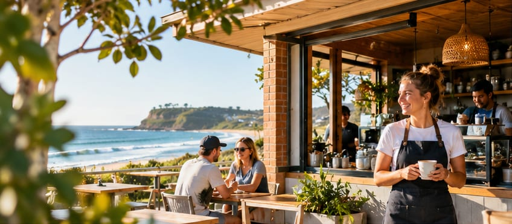
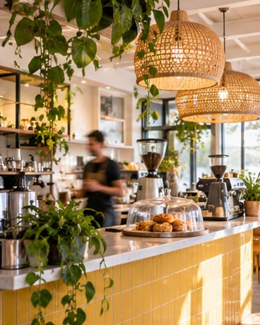

Rostering, your way
Build weekly schedules, manage shifts and make changes with a clearer view of your people and venue.
Your team is the heart of your business. Butterbox brings rostering, time and attendance, and everyday team coordination together—so you've got more room for the good stuff.
Thoughtful tools for cafés, restaurants and hospitality teams.

Running a busy venue means balancing people, shifts and the unexpected. Butterbox keeps the important work connected, without making things complicated.
Build weekly schedules, manage shifts and make changes with a clearer view of your people and venue.
Bring attendance and timesheets together so reviewing worked time feels less like an end-of-week scramble.
Help managers and staff stay connected to the shifts, updates and information they need.
Hospitality doesn't happen behind a desk. Butterbox helps keep the day-to-day organized so managers can spend less time sorting out admin and more time supporting the people who make every shift work.
“The little things behind the scenes make a big difference out front.”
The Butterbox approachOrganize the team and put a weekly roster in place.
Give staff and managers visibility into their shifts and changes.
Review attendance and timesheets in the same connected workflow.
Warm service, early starts, busy lunches and a team that makes it all happen. That's the world Butterbox is designed around.

Less time switching between tools. More clarity for your managers. More good days for everyone.
Discover the features